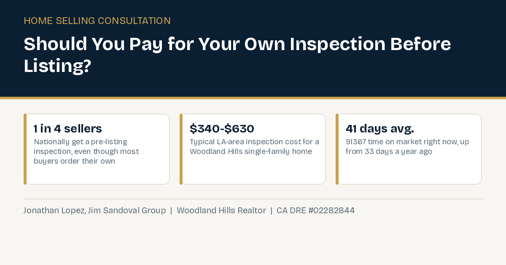

Should I Get a Pre-Listing Inspection Before I Sell My Woodland Hills Home?

Almost every Woodland Hills seller reaches the same fork in the road once they decide to list: pay for a home inspection now, before a single buyer has toured the house, or just wait and let whatever a buyer's own inspector finds come up later, during escrow. There is no legal requirement to do a pre-listing inspection. It is entirely optional. The real question is whether skipping it is actually saving you anything, or just moving the same problem to a worse moment.
What a Pre-Listing Inspection Actually Costs in Los Angeles
Based on current Los Angeles-area inspection pricing, a standard inspection runs $226 to $340 for a condo or home under 1,000 square feet, $340 to $490 for 1,000 to 2,000 square feet, $490 to $630 for 2,000 to 4,000 square feet, and $630 to $800 for anything larger. Most Woodland Hills single family homes land in the $340 to $630 range. A few common add-ons are worth budgeting for separately: termite or wood-destroying organism inspection runs $140 to $210, a sewer line scope (worth doing on an older Valley home with mature trees near the line) runs $150 to $300, and a pool or spa inspection, relevant to plenty of Woodland Hills backyards, runs $100 to $200. A full inspection typically takes two to three hours.
Why Most Sellers Skip It, and Why That Gap Is Worth a Second Look
Nationally, only about one in four sellers get a pre-listing inspection, even though roughly 85% of buyers order their own inspection at some point in the process. That is a real mismatch. Most sellers are betting that whatever an inspector finds either will not matter, or would have come up anyway, so there is no point paying for it twice. The buyer usually does end up paying for their own inspection regardless of what a seller does beforehand, so a pre-listing inspection is not about avoiding a second inspection. It is about knowing what that second inspection is going to say before you are already committed to a specific buyer, a specific price, and a specific closing date. This is a similar theme to whether buyers should waive their own inspection contingency to compete, both come down to how much you actually know about a property's condition before you are legally committed.
What Actually Happens When an Inspection Surprise Shows Up Mid-Escrow
Here is the practical version of what goes wrong without a pre-listing inspection. A buyer makes an offer, you accept, escrow opens, and a week or two in, the buyer's inspector finds something real: an aging sewer line, an electrical panel that is not up to current code, roof wear past what photos showed. At that point you are not negotiating from a position of choice. You are negotiating from a position of already being under contract, with a buyer who now has real leverage to ask for a price reduction, a credit, or repairs, or to walk away entirely under a standard inspection contingency. Finding the same issue before you ever listed means you get to decide, on your own timeline, whether to fix it, price around it, or disclose it and move on, rather than reacting to a buyer's demand mid-transaction.
What Inspectors Tend to Flag in Older Woodland Hills Homes
The parts of west Woodland Hills built out in the 1960s and 1970s carry a specific set of age-related issues that come up repeatedly in inspection reports here: aging clay or cast iron sewer laterals that mature trees have had decades to intrude on, older electrical panels that no longer meet current code and can complicate insurance underwriting, original roofing well past its expected service life, and pool equipment that has not been updated since the home was built. None of these are unusual or a sign of a poorly kept home, they are simply what shows up on a house of a certain age in this specific area. Knowing which of these apply to your specific property, before a buyer's inspector finds them, is exactly the kind of thing a pre-listing inspection settles up front instead of mid-escrow.
Why the Current Market Makes This More Relevant, Not Less
This matters more in a market where buyers already have room to negotiate. As of today, 206 homes are actively listed in the 91367 zip, and 45 of them, roughly 1 in 5, already carry a price reduction. The average home is taking 41 days to sell, up from 33 days a year ago. That is not a market where a seller wants to hand a buyer an unexpected, real reason to renegotiate mid-escrow. A pre-listing inspection does not make your home sell faster or for more by itself, but it removes one of the more common ways a deal gets reopened or falls apart after you thought it was done.
The Honest Tradeoffs
A pre-listing inspection is not free, and it is not risk-free either. Anything it finds becomes something you now know, and in California, known material defects generally have to be disclosed to a buyer regardless of whether you commissioned the inspection that found them. So this is not a way to learn about a problem and then quietly avoid mentioning it, see what you're actually required to disclose as a Woodland Hills seller for the full picture. What it does give you is the chance to fix a fixable issue before it ever reaches a buyer's inspection report, price the home realistically around an issue you are choosing not to fix, or simply walk into negotiations already knowing your own home's condition as well as, or better than, the buyer's inspector will.
Bottom Line
There is no universal right answer here. A newer, well-maintained home with a clean history might not need one. An older Woodland Hills home, especially one with an aging roof, an older sewer line, or a pool, is exactly the kind of property where a $340 to $630 inspection is cheap insurance against a five-figure renegotiation mid-escrow. The way to actually decide is to walk through your specific home's age, systems, and history with someone who knows what a buyer's inspector is likely to flag, before you list, not after an offer is already on the table.
Frequently Asked Questions
How much does a pre-listing inspection actually cost in Woodland Hills?
Based on current Los Angeles-area pricing, a standard inspection runs roughly $340 to $630 for a typical 1,000 to 4,000 square foot single family home, with add-ons like termite ($140-$210), sewer scope ($150-$300), or pool/spa ($100-$200) priced separately.
If I get a pre-listing inspection and it finds a problem, do I have to tell buyers about it?
Generally yes. California disclosure requirements cover known material defects regardless of how you learned about them. A pre-listing inspection is not a way to learn about an issue and avoid disclosing it, it is a way to find out on your own timeline instead of a buyer's.
Do most sellers actually get a pre-listing inspection?
No. Nationally only about 1 in 4 sellers do, even though roughly 85% of buyers order their own inspection anyway. That gap is exactly why a pre-listing inspection can be a real advantage: most of your competition skips it.
Does a pre-listing inspection make my home sell faster or for more money?
Not directly or automatically. What it does is reduce the chance of a real, unexpected issue surfacing mid-escrow and reopening negotiations, which in a market where 45 of 206 active 91367 listings already have a price cut and homes average 41 days on market, is a genuinely useful thing to avoid.
What if the inspection finds something expensive to fix?
You get to decide how to handle it on your own terms: fix it before listing, price the home to reflect it, or disclose it and let buyers factor it into their offer, rather than having a buyer's inspector find it after you are already under contract with less room to negotiate.
Is a pre-listing inspection worth it for every home?
Not necessarily. A newer home with a clean maintenance history may not need one. Older homes, or ones with an aging roof, sewer line, or pool, are the cases where the cost is usually cheap insurance against a bigger renegotiation later.
Wondering whether a pre-listing inspection makes sense for your specific Woodland Hills home?
Or call (818) 934-7576.